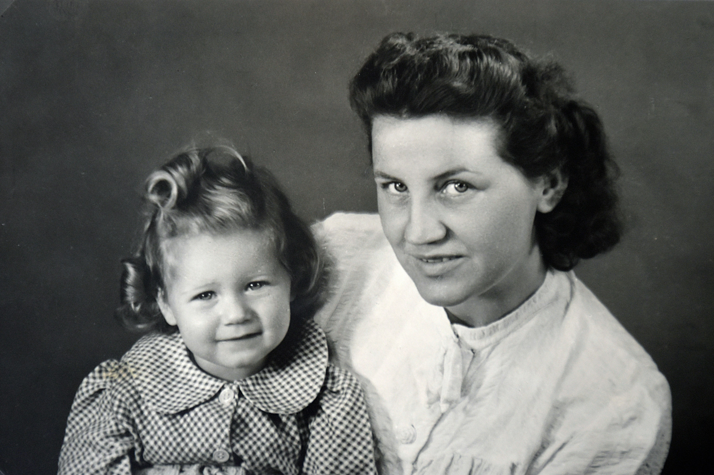

About Us
Origin of the Mamma Mia Restaurant
Mamma Mia Ristorante was born in 1987 in the sun-drenched hills of Tuscany, Italy, where Mia Rosetti first opened her kitchen doors to the neighbors who couldn't resist the scent of her slow-simmered ragù drifting through the cobblestone streets. What began as a humble family table — just six chairs, a wood-fired oven, and a lifelong devotion to honest cooking — soon became the most beloved gathering place in the village.
Mia believed that food was never just food. It was memory. It was love passed down through flour-dusted hands, through recipes whispered from mother to daughter, through Sunday lunches that stretched long into the evening. Her philosophy was simple: use only the freshest ingredients, never rush the sauce, and always cook as if family is coming home.
In 2005, Mia's daughter — Luna Rosetti — carried that same flame across the ocean, opening the first international Mamma Mia Ristorante location. She brought with her Mia's original recipe notebooks, her cast-iron pans, and an unshakeable belief that the world deserved a taste of real Italian cooking. The restaurant quickly earned a reputation not just for its food, but for the warmth that filled every corner of it.
Today, Mamma Mia Ristorante serves thousands of guests each year, with every dish still rooted in the same tradition Mia started over three decades ago. The names on the menu may carry Italian words, but the feeling they leave behind is universal — the comfort of a meal made with care, and the joy of a table shared.
Our Philosophy
At Mamma Mia Ristorante, we believe that great food is not made in a hurry. It is built on patience, tradition, and an unwavering respect for ingredients. Every sauce is slow-simmered, every dough is hand-kneaded, and every dish is plated with the same care that Mia Rosetti brought to her kitchen table in Tuscany.
We source only the freshest local and imported Italian ingredients, because we know that quality begins long before the cooking does. Our philosophy is simple: honor the tradition, trust the process, and cook with love.
Founders
Mia Rosetti — Founder & Head Chef
Born in the rolling hills of Tuscany, Mia Rosetti grew up watching her mother cook
for the entire village. After decades of perfecting her craft in Florence's finest
kitchens, she opened Mamma Mia Ristorante in 1987 with nothing but a wood-fired
oven, a handful of family recipes, and an unshakeable belief that food has the power
to bring people together.
Luna Rosetti — Co-Founder & Managing Director
Mia's daughter, Luna, grew up setting tables and greeting guests before she could
even read a menu. After completing her studies in hospitality management in Milan,
she returned home to stand beside her mother and turn Mamma Mia Ristorante into the
internationally recognized name it is today. Where Mia feeds the soul, Luna builds
the vision.
